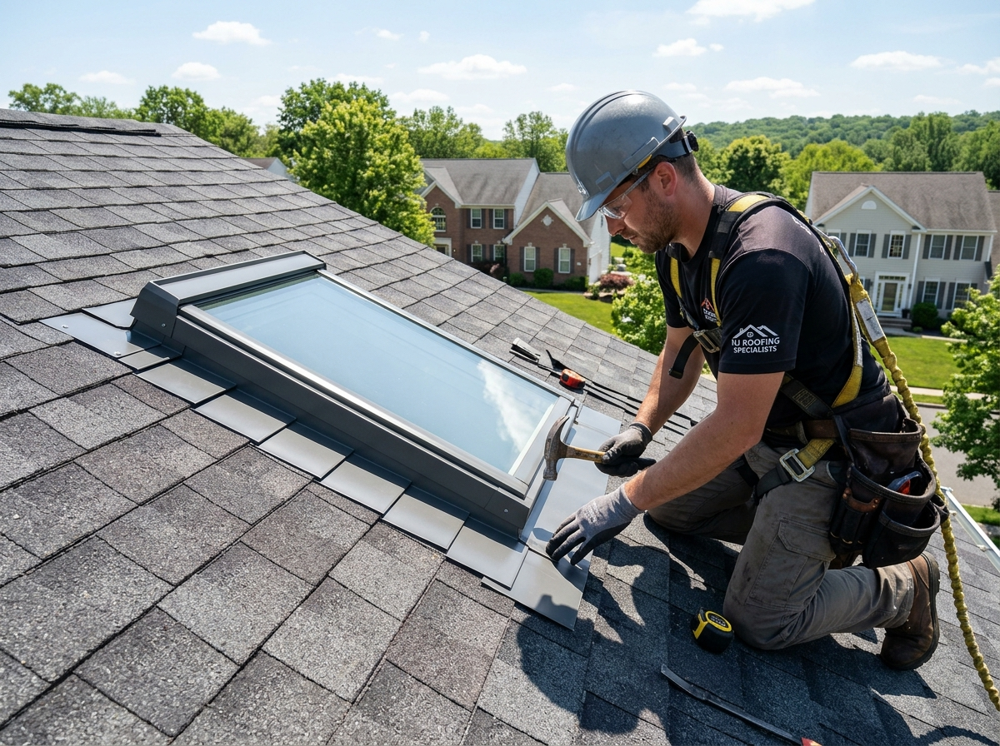
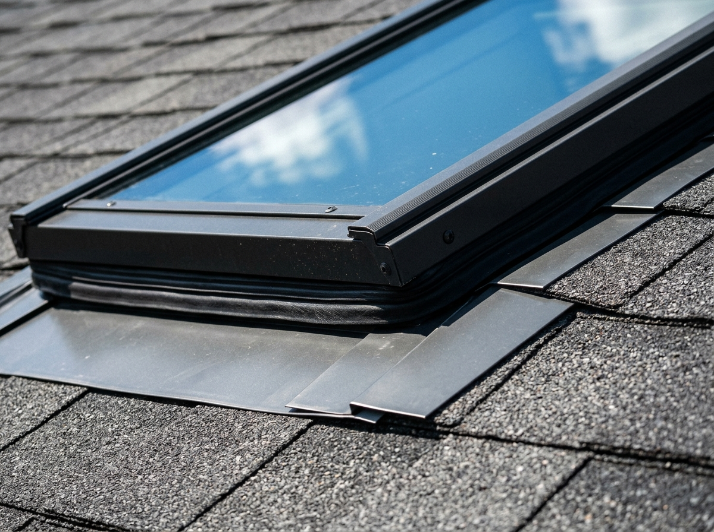
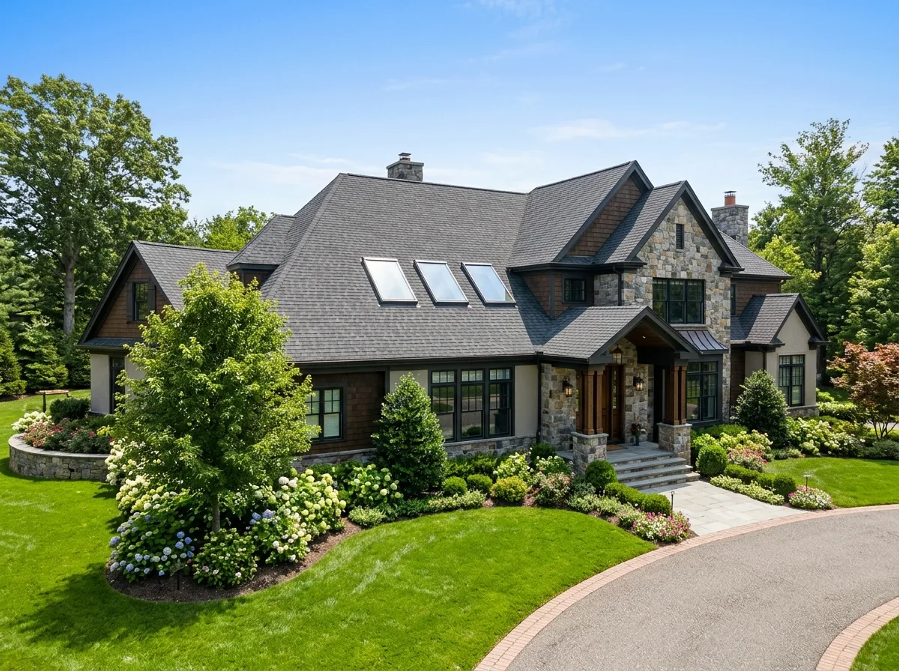

Skylight Repair & Replacement in Bridgewater, NJ
Stop stubborn ceiling leaks, eliminate condensation, and flood your living spaces with natural light. Bridgewater Roofer delivers certified Velux® deck-mounted replacements, factory flashing rebuilds, and solar-powered fresh air venting skylights backed by a 10-year No-Leak guarantee.

Water dripping from your skylight frame or light shaft?
Skylight leaks rarely stay localized. Water traveling down drywall light tunnels saturates attic insulation, rots structural roof headers, and breeds toxic black mold.
Professional Skylight Repair & Installation for Bridgewater Properties
A skylight is an architectural opening in your roof deck that must withstand the harshest weather Central New Jersey delivers—from heavy winter snow accumulation to driving torrential nor'easters. When old seals dry out or roofing tar cracks, water penetrates into your ceiling.
Bridgewater Roofer specializes in certified Velux® deck-mounted and curb-mounted skylight systems. Rather than applying temporary smears of roofing cement that crack within months, our technicians strip back surrounding shingles, inspect structural curb framing, install self-adhering high-temperature ice and water membranes, and weave engineered aluminum step flashing into every shingle course.
Whether you need to resolve a persistent leak on a cathedral ceiling in Martinsville or upgrade to solar-powered fresh air venting skylights with automated acoustic rain sensors, we deliver permanent, warrantied solutions.

Common Skylight Problems We Resolve
Skylights face intense UV exposure and heavy winter ice loads. Here are the primary failure points our field specialists diagnose and repair:
Active Water Dripping
Rainwater penetrating around the glass frame or light tunnel during storms indicates failed saddle flashing or dried-out factory rubber perimeter gaskets.
Foggy Condensation Panes
Moisture or hazy white fog trapped between double-pane glass signals that the hermetic seal has failed, allowing insulating argon gas to escape.
Cracked Acrylic Dome
Older plastic bubble skylights become brittle under UV oxidation, cracking under winter snow weight, hail impacts, or fallen tree limbs.
Corroded Step Flashing
Rusted, displaced, or missing aluminum step flashing pieces along the side curbs allow water to seep beneath shingles during heavy rain.
Ceiling Drywall Staining
Brown water stains, bubbling paint, or softened drywall in the ceiling light shaft reveal hidden moisture migrating along framing rafters.
Winter Ice Dam Inflow
Snow dammed against the upper skylight saddle melts from attic heat loss, forcing standing water upwards underneath flashing flanges.
Drafts & Excessive Heat Gain
Single-glazed or uninsulated aged units bleed winter heating air and act as magnifying glasses in summer, driving up air conditioning costs.
Old Roofing Tar Patches
Previous handymen applying black roof mastic around skylight edges create unsightly dams that crack within 6 months of summer heat.
Where Skylight Problems Commonly Develop
Click on common skylight problem symptoms below to inspect how vulnerabilities develop and how certified Velux technicians resolve them.

Water Dripping from Skylight Frame
Water leaking around skylight drywall tunnels during rain usually stems from dried-out rubber perimeter gaskets or deteriorated top saddle flashing on the uphill slope.
Signs It May Be Time for Skylight Repair or Replacement
Identifying skylight degradation before catastrophic ceiling drywall collapse saves thousands in structural repairs. Watch for these symptoms:
Brown Water Stains
Discoloration rings or bubbling latex paint on drywall light shaft corners reveal water traveling down rafters.
Permanent Glass Fogging
Moisture or hazy white calcium deposits between glass panes indicate the argon gas insulation has escaped.
Drafts in Winter
Feeling noticeable cold air drops beneath the skylight during winter indicates dried-out frame gaskets.
Cracks or Yellowing Dome
Visible stress fractures in tempered glass or deep yellowing of plastic bubbles signal imminent shatter risk.
Tar or Caulk Patches
If previous roofers smeared roofing cement around the curb, the mastic has likely dried, shrunk, and cracked.
Damp Attic Insulation
Attic insulation surrounding the skylight curb feeling damp or crusty confirms active condensation or leaks.
Excessive Summer Heat
Rooms beneath old skylights becoming stiflingly hot indicate outdated glass lacking Low-E solar thermal coatings.
Age Exceeds 15–20 Years
Skylights installed prior to 2008 have reached the end of their engineered rubber gasket and seal lifespan.
Skylight Engineering for Bridgewater Homes & Rooflines
Bridgewater's varied residential architecture—from custom contemporary estates in Martinsville to sprawling colonial homes in Green Knoll—often incorporates vaulted cathedral ceilings and second-story skylights to illuminate expansive floorplans.
However, Somerset County experiences significant temperature differentials, ranging from sub-zero winter chills to 95°F humid summer peaks. When warm indoor air meets freezing single-pane glass, severe interior condensation occurs. Furthermore, heavy winter snow pack on steep roofs slides down into skylight saddles, creating high hydrostatic pressure.
Bridgewater Roofer exclusively installs factory-warrantied Velux® deck-mounted systems featuring Low-E3 dual pane laminated glass with Neat® glass technology that disperses water droplets evenly and stays clean longer. Every unit is insulated with high-temperature ice membranes and customized aluminum step flashing designed for Somerset County weather.

Our 8-Step Skylight Repair & Replacement Process
We follow strict manufacturer-certified protocols for every skylight project, safeguarding both your roof and your interior furnishings:
Interior Protection
We place heavy protective canvas drop cloths directly beneath the skylight opening to catch any dust or debris.
Roof Inspection & Measurement
Our technician inspects curb dimensions, roof slope, and existing shingle condition to confirm unit compatibility.
Non-Destructive Shingle Removal
We carefully lift surrounding shingles without tearing to expose the underlying metal step flashing and underlayment.
Old Skylight Extraction
The failing skylight and weathered flashing kits are removed, exposing the raw structural wood roof deck header.
Header & Curb Inspection
We inspect structural 2x4/2x6 wood framing for moisture rot, replacing any damaged lumber with treated framing.
Self-Adhering Ice Barrier Wrap
We wrap a continuous high-temperature self-adhered waterproof membrane directly from the deck up all four skylight sides.
Velux Factory Flashing Weave
We interweave individual aluminum step flashing pieces between shingle courses, topped by a solid upper saddle.
Interior Trim & Water Testing
We test motorized venting units, verify weather-tight seals, clean the glass, and vacuum interior work areas cleanly.
Complete Skylight Services We Deliver
Explore our comprehensive daylighting and leak repair solutions for residential and commercial properties:
Skylight Leak Repair & Re-Flashing
Targeted step flashing rebuilds, saddle replacement, and ice barrier collars to stop active ceiling leaks permanently.
Flashing Repair →Velux Deck-Mounted Replacement
Factory-warrantied direct-to-deck installations featuring triple-layer water defense and laminated Low-E3 glass.
Deck-Mounted Details →Velux Curb-Mounted Replacement
Custom-fit replacement units mounted over existing wooden curbs, ideal for low-pitch additions and flat roofs.
Curb-Mounted Options →Solar-Powered Venting Skylights
Automated fresh air venting with acoustic rain sensors and zero wiring, qualifying for up to 30% federal tax credits.
Solar Venting Guide →Velux Sun Tunnel® Daylighting
Tubular optical daylighting systems that channel bright natural sunlight into dark hallways, closets, and bathrooms.
Sun Tunnel Options →Skylight Solar Blinds & Shades
Factory-installed remote-controlled blackout or light-filtering shades that reduce solar heat gain by up to 45%.
Solar Shade Details →Emergency Skylight Tarping
Rapid 24/7 emergency weatherproofing for shattered glass or storm-damaged skylights during severe weather.
Emergency Tarping →Commercial Dome Skylights
High-impact polycarbonate commercial skylight replacements and smoke vents for industrial and retail buildings.
Commercial Solutions →Skylight Systems & Glazing Options
Explore our certified Velux daylighting configurations engineered for energy efficiency and weather protection:
Velux Deck-Mounted Glass Skylights
Engineered to mount directly to the structural roof decking with three patented layers of water protection. Features Low-E Clean, Quiet & Safe laminated glass.
Key Installation Advantages:
- Deck-seal adhesive membrane wrapped directly to roof deck
- Surrounding high-temp ice and water underlayment collar
- Engineered aluminum step flashing integrated into shingles

Skylight Repair or Full Replacement?
Whether your skylight can be resealed or requires replacement depends on age, glass seal integrity, and structural curb condition:
Skylight Repair May Be Appropriate When:
- ✔ The skylight unit is under 10–12 years old with crystal clear glass.
- ✔ The leak is isolated to surrounding step flashing, head saddle, or dried caulk.
- ✔ The inner and outer glazing seals remain airtight with no condensation between panes.
- ✔ Surrounding roof shingles are in healthy condition with ample remaining lifespan.
Full Replacement Is Recommended When:
- ✔ The skylight is over 15–20 years old or features outdated acrylic plastic bubbles.
- ✔ Permanent condensation or calcium fogging is trapped between the glass panes.
- ✔ You are replacing your roof (read our complete analysis on replacing skylights during a new roof installation when scheduling a roof replacement).
- ✔ You want to qualify for the 30% Federal Clean Energy Tax Credit on solar venting units.
What Affects the Cost of Skylight Repair & Installation?
Skylight estimates vary based on dimensions, roof accessibility, and mechanical operation. Here are the genuine technical factors that influence pricing:
Skylight Model & Operation
Fixed deck-mounted units are the most economical, while solar-powered venting skylights with rain sensors feature integrated motors.
Unit Dimensions & Size
Standard residential sizes (e.g., 21"x45" or 30"x45") require standard flashing, while large custom configurations require extra framing.
Deck-Mounted vs. Curb-Mounted
Deck-mounted units mount flush with shingles, while curb-mounted models require site-built insulated wooden curbs on low-pitch roofs.
Roof Pitch & Height
Steep slopes (8/12 and greater) or three-story cathedral peaks require safety harness tie-offs, roof brackets, and specialized staging.
Roofing Material Interlocking
Standard architectural asphalt shingles are straightforward to re-weave, while standing seam metal or slate requires specialized hand metalwork.
Interior Light Shaft Height
Deep cathedral drywall light shafts over 10 feet tall require interior scaffolding and drop-cloth floor protection during teardown.
Solar Thermal Blinds Add-On
Adding factory solar room-darkening shades provides enhanced energy control and qualifies for federal clean energy tax credits.
Federal 30% Clean Energy Credit
Eligible Velux solar-powered venting units qualify for a 30% federal tax credit on both product and labor, substantially lowering net costs.
Bridgewater Skylight Code & Permit Guidelines
Under the New Jersey Uniform Construction Code (NJ UCC), replacing an existing skylight of identical size within an existing framed opening is classified as ordinary maintenance and does not require municipal construction permits in Bridgewater Township.
However, creating a brand new skylight opening that cuts into structural roof rafters, collar ties, or ceiling joists requires structural header framing and a building permit from the Bridgewater Township Code Enforcement Department (located at 100 Commons Way). Bridgewater Roofer manages all architectural drawings and permit filings for new cut-in installations.

Recent Skylight Projects in Somerset County
Explore authentic skylight replacements and leak repairs completed by our certified crew across Bridgewater:

Solar-Powered Venting Skylight Installation
Two 20-year-old fixed acrylic bubble skylights over a cathedral living room had fogged and developed perimeter leaks. We installed motorized Velux solar venting units with acoustic rain sensors and room-darkening shades.

Cathedral Ceiling Skylight Flashing Rebuild
Persistent ceiling drips were staining drywall in a second-story master suite. We stripped back shingles, removed dried roofing tar, wrapped curbs in high-temperature ice barrier, and re-flashed with factory Velux aluminum step flashing.
Interactive Before & After Comparison
Drag the slider handle to inspect the skylight and roofline transformation.
 After (New Velux Glass Skylight)
After (New Velux Glass Skylight)
 Before (Old Leaking Skylight Flashing)
Before (Old Leaking Skylight Flashing)
Why Choose Us for Skylight Services?
We combine certified factory training with meticulous interior protection to guarantee zero-leak results:
Certified Velux® Installers
Our technicians complete rigorous factory training, ensuring all installations meet Velux triple-layer water defense requirements.
Factory Flashing Only
We never rely on temporary roofing tar or caulk. We install precision-formed aluminum step flashing kits woven into shingles.
10-Year No-Leak Warranty
Every replacement is backed by a 10-year manufacturer No-Leak installation warranty plus our dedicated workmanship guarantee.
Interior Drop-Cloth Protection
We shield your furniture, hardwood floors, and rugs with heavy-duty drop cloths before beginning any teardown overhead.
Fast Same-Day Turnaround
Most single-unit skylight replacements are completed in 2 to 4 hours, keeping your home sealed and weather-tight by evening.
Federal Tax Credit Assistance
We provide full manufacturer certification paperwork for eligible solar venting skylights to claim up to a 30% federal tax credit.
What Customers Say About Our Skylight Work
Read verified feedback from Bridgewater and Somerset County property owners who entrusted us with their skylights:
Related Roofing Services
Explore other specialized exterior solutions we deliver across Bridgewater Township:


Skylight Services Across Bridgewater & Somerset County
Our certified skylight technicians provide rapid diagnostics, flashing repairs, and unit replacements across Somerset County:
Bridgewater, NJ
Cathedral ceiling Velux replacements & precision flashing rebuilds
Somerville, NJ
Historic residential roof skylight retrofits & custom step flashing
Raritan, NJ
Residential Velux deck-mounted glass units & sun tunnel installations
Martinsville, NJ
Steep mountain rooflines, solar venting skylights & ice dam seals
Bound Brook, NJ
Low-pitch addition curb-mounted skylights & flashing restorations
Hillsborough, NJ
Suburban colonial skylight upgrades & thermal Low-E replacements
Warren, NJ
Luxury estate skylight arrays, solar venting units & motorized shades
Basking Ridge, NJ
Sun tunnel hallway installations & architectural glass replacements
Bedminster, NJ
Estate cathedral ceiling skylights & copper step flashing integration
Branchburg, NJ
Residential Velux deck mount replacements & ceiling leak mitigation
Manville, NJ
Affordable glass skylight replacements & non-destructive resealing
Skylight Repair & Replacement FAQs
Find straightforward, expert answers to questions homeowners ask when planning skylight repair or replacement in Bridgewater, NJ.
Can a leaking skylight be repaired without replacing the entire unit?
Yes, in many cases. If the glass seal and inner frame are structurally sound, over 70% of skylight leaks stem from compromised surrounding step flashing, failed ice barrier collars, or dried-out exterior roofing sealants. We can rebuild the perimeter flashing assembly without replacing the skylight.
Should I replace my skylights when replacing my roof?
Yes, absolutely. Replacing skylights during a reroof is strongly recommended by manufacturers. Removing old shingles exposes the skylight flashing. Re-using an aged 15-to-20-year-old skylight with a brand-new 50-year roof commonly leads to premature leaks and expensive retroactive repairs.
Which skylight brand do you install in Bridgewater?
We install certified Velux® skylights, including solar-powered fresh air venting skylights, fixed deck-mounted units, curb-mounted models, and Velux Sun Tunnel® tubular daylighting systems featuring Low-E laminated glass.
Is there a federal tax credit for solar venting skylights?
Yes! Homeowners who install eligible Velux solar-powered venting skylights and solar shades can qualify for up to a 30% federal clean energy tax credit on both product and installation costs under current federal clean energy incentives.
How do you detect where a skylight is leaking?
We conduct non-destructive moisture meter checks, thermal imaging, and staged water testing around the upper saddle flashing, side step flashing, and glass rubber gaskets to pinpoint the exact failure point.
Why is water dripping from my skylight during winter freezes?
Winter drips are often caused by interior condensation rather than an active exterior roof breach. High indoor humidity against single-pane or aged insulated glass condenses and drips down interior drywall tunnels. We inspect both the thermal seal and roof flashing to diagnose the exact issue.
Do you repair interior drywall damaged by skylight leaks?
Our technicians repair the exterior roof envelope, framing, and ice barriers to halt water ingress permanently. For interior drywall, we provide complete moisture drying and can recommend trusted local painting and drywall repair partners.
How long does skylight replacement take?
A standard deck-mounted skylight replacement takes approximately 2 to 4 hours per unit, performed with interior drop cloths to protect your flooring and furniture.
How much does skylight repair or replacement cost in NJ?
Flashing repairs and resealing typically cost between $450 and $950. Full Velux unit replacement ranges from $1,600 to $3,200 depending on dimensions, roof pitch, and whether manual or solar motorized venting is selected.
What warranties protect my new skylight?
Velux skylights installed with factory flashing systems include a 10-year No-Leak installation warranty on materials, backed by Bridgewater Roofer's 10-year dedicated workmanship guarantee.
Helpful Skylight & Roofing Resources
Learn more about maintaining your home daylighting and preventing roof leaks:

What Causes Roof & Skylight Leaks in NJ?
Discover the most frequent culprits behind water leaks in Somerset County homes, from dry-rotted seals to flashing failures.
Read Full Guide →
Should You Replace Skylights With a New Roof?
Explore manufacturer flashing kit requirements, reroofing labor efficiencies, and warranty protections for Somerset County homes.
Read Skylight Guide →
Bridgewater Exterior Permit Guide
Everything homeowners need to know about Somerset County construction permits and exterior architectural alterations.
Read Permit Guide →Need Skylight Repair or Replacement in Bridgewater?
Stop ceiling leaks and brighten your home today. Speak directly with a certified Velux skylight specialist about flashing rebuilds, deck-mounted replacements, and solar clean energy tax credits.